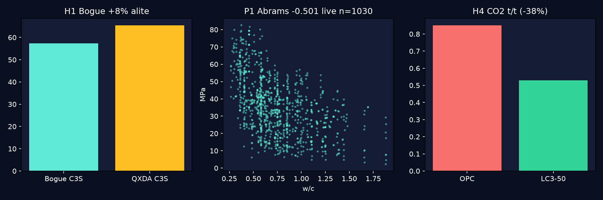

benchmarks/*.json with sources+timestamps. Bogue +8% alite bias, C-S-H ~1.75 with 2026 NMR, SCM discontinuity, LC3 0.85→0.53 tCO₂/t. Verified on live UCI Concrete 1030 (w/c corr −0.501, R² 0.615). docker compose up reproduces all. Negatives kept — the trustworthy MIT repo to fork for your PhD.SEO: portland cement Bogue QXDA Rietveld, C-S-H tobermorite jennite NMR, SCM LC3 CO₂, concrete compressive strength UCI benchmark, reproducible docker research.
docker compose up --build python experiments/01_bogue_verification.py python experiments/02_hydration_benchmark.py && python experiments/03_hidden_patterns.py

Above: auto-generated assets/preview.png. Below in README: assets/demo.gif terminal demo (asciinema+agg method, Python fallback verified).
01_bogue_verification.py on data/sample_clinker.csv → benchmarks/bogue.json. Guardrail: PCA IS791 blend impossibles.benchmarks/hydration.json.hidden_patterns.json P4.| Pattern | Live number | Lesson |
|---|---|---|
| Abrams w/c law | −0.501 | Re-found live; strongest single predictor |
| Superplasticizer unlock | coef +0.29, corr +0.366 | Enables low-w/c; n=12 flips to −1.14 = small-n warning |
| Age log | 21.55 → 39.59 MPa | Medians <28d vs ≥28d; log(Age) feature |
| BT/PT α | MCL scatter @fixed Ca/Si | Vacancy ratio explains polymorphism |
| Clinker dominates CO₂ | >90% variance | Cut fclinker first (LC3), then process |
pip install -r requirements.txt python experiments/01_bogue_verification.py # → benchmarks/bogue.json python experiments/02_hydration_benchmark.py # → benchmarks/hydration.json python experiments/03_hidden_patterns.py # → benchmarks/hidden_patterns.json (prefers data/concrete_uci1030.csv) cat benchmarks/*.json docker compose config # must pass; lab on :8888
https://archive.ics.uci.edu/ml/.../Concrete_Data.xls (124928B live 2026-09-30) → data/concrete_uci1030.csv. Kaggle mirrors: zain280, ahmeduzaki CC0, elikplim, niteshyadav3103 + discussion 685420 (XGBoost 93% R²). Strength-only (no oxides) = documented limit. Rietveld/NMR/MIP-He need labs — logged, not claimed.docs/VALIDATION.md + every JSON. Playwright MCP absent → Python fallback verified (see docs/demo.md).papers/outline.md (journal skeleton: Intro/Background/Methods/Results/Hidden/Threats). Next: full 1030 XGBoost + Rietveld on your clinker + NMR + MIP-He pair. Keep negatives. Cite Taylor 1997 + all URLs.MIT © 2026 Contributors · Generated 2026-09-30 · Open ../README.md for GitHub rendering.